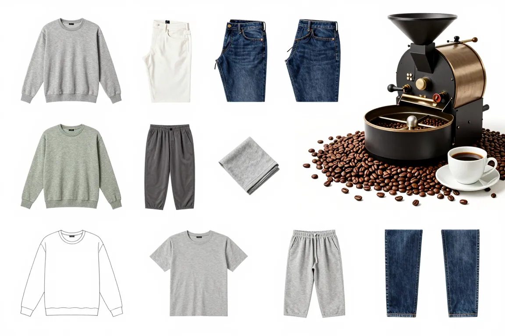

Простая немаркированная одежда и простые страницы: серый флис, белые кроссовки, папины джинсы, шрифты по умолчанию и плоские снимки при дневном свете. Назвал его в 2013 году трендовый отчёт, а распространила статья в журнале.

Главная идея
Выбирайте одинаковость, а не отличие: образ, сливающийся с остальными, — спокойный ответ ленте, награждающей тех, кто выделяется.
Принципы дизайна
Ставьте страницу на светло-серый (#F2F2F0) или белый фон с одним синим цвета джинсы (#35597F) для ссылок и кнопок.
Берите один нейтральный гротеск в двух начертаниях, 400 и 600, размерами 14, 16, 20 и 32px.
Показывайте товары или людей при плоском дневном свете, снятыми анфас на уровне глаз, без фильтра и реквизита.
Держите одну колонку 640–720px с боковыми полями 24px и 32px между блоками.
Пишите подписи простыми существительными: «Джинсы», «Флис», «Корзина». Без слогана и восклицательного знака.
Держите углы 4px и границы 1px цвета #D4D4D0; без теней и градиентов.
Ограничьте палитру 4 нейтральными и 1 синим и ставьте любой логотип или знак бренда мелко или не ставьте вовсе.